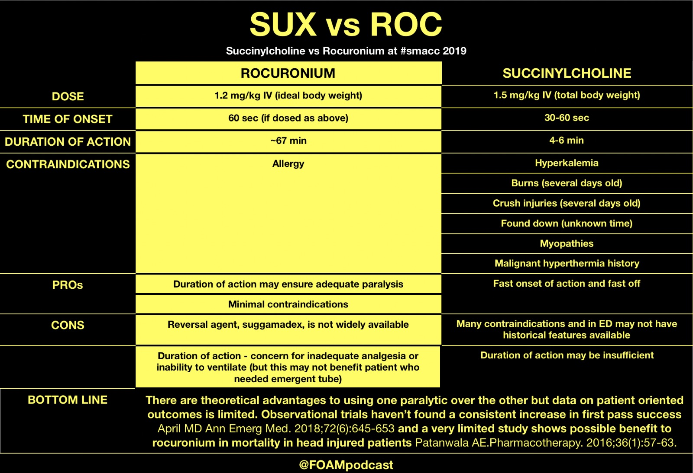
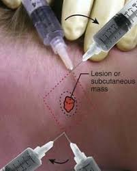

Procedures¶
Follow up
- Go to ED and do lung U/S, see sliding lung sign
In all procedures, there is
- Preparatory phase
- Performance phase
- Follow-up phase
Basic Care of Patient¶
Intake¶
Nasogastric Tube Insertion¶
Parenteral Nutrition¶
Oral Feeding in Child¶
Output¶
Urinary Catheter¶
Bed pan¶
Diapering¶
Hygiene¶
Oral Hygiene¶
Genital Hygiene¶
Body Hygiene¶
Moving Patients¶
LogRoll¶
Developmental Assessment¶
Neonatal Assessment¶
Pediatric Development Assessment¶
Pubertal Tanner Staging¶
Wound Care¶
Types of Wound¶
Dress an open wound¶
Materials required
1. Non-sterile glove
2. Dressing set
Preparatory Phase
- Identify the patient using two patient identifiers.
- Explain procedure, potential complications and obtain consent from the patient.
- Switch off fan, if applicable. Draw curtain around the bed.
- Perform hand hygiene.
- Unfold the wrapper of the dressing set without touching the inner surface.
- Pour the required solution into the compartment of the dressing tray.
- Add dressing materials, wound care products or equipment into the sterile field as required.
Performance Phase
- Perform hand hygiene.
- Position patient in a comfortable and safe position. Remove necessary clothing to expose the dressing. Place protective sheet.
- Wear non-sterile gloves to remove the old dressing. Discard gloves after.
- Perform surgical hand rub.
- Wear sterile gloves if necessary.
- Assess the condition of the wound using the mnemonic:
- M – Measure (wound size – length, width, depth)
- E – Exudate (amount, colour, consistency, odour)
- A – Appearance (wound bed colour)
- S - Suffering (pain score)
- U – Undermining (size – circumference area using clock system)
- R – Re-evaluate (signs of infection progress of healing)
- E – Edge (wound edge and periwound area)
- Drape surrounding area of the wound with the dressing towel.
- Cleanse wound from least contaminated to most contaminated area. (Use separate swabs for each cleansing stroke)
- Irrigate wound if necessary.
- Clean the surrounding area of the wound.
- Use dry gauze to dab wound dry.
- Apply wound care products (if needed) and primary dressing.
- Secure the dressing with surgical tape /transparent dressing /bandage.
- Remove gloves.
- Perform hand hygiene.
- Assist patient to a comfortable position, and help patient to dress up.
- Perform hand hygiene.
Follow up Phase
- Document the date and time of procedure, MEASURE findings and type of wound care products / dressings used in clinical notes
- Perform hand hygiene.
Suture Removal¶
Bloods and Injections¶
Needles and Disposal¶
| Color | Gauge | Application |
|---|---|---|
| Blue | 23 Gauge |
Capillary Blood Glucose Measurement¶
Material: gloves, alcohol swabs, lancets, test strips, glucometer, gauze, sharp box, plaster
Preparatory Phase
- Identify the patient using two patient identifiers.
- Explain procedure to patient and obtain consent.
- Perform hand hygiene.
- Prepare material
- Check test strips expiry date and lot number. Ensure strip is not expired and that lot number matches glucometer.
Performance Phase
- Perform hand hygiene.
- Insert test strip into glucometer.
- Wear gloves.
- Choose site of puncture. It should be
- On non-dominant hand
- non-index finger
- over on the lateral/medial aspect of the distal tip
- no overlying infection.
- Swab the site of puncture, and allow alcohol to dry.
- Squeeze fingertip and puncture with lancet.
- Discard lancet into sharp box.
- Apply glucometer with test strip over drop of blood.
- Clean blood away with gauze and apply plaster.
- Allow time for glucometer to give reading.
Follow up phase
- Discard used items, remove gloves and perform hand hygiene.
- Document the date, time and result of procedure (report abnormal finding).
- Perform hand hygiene.
SC Injection¶
Preparatory Phase
- Check electronic Medication Administration Record (eMAR) for 7 rights of medication administration. (patient, medication, dosage, route, time/frequency, diluent and rate/speed)
- Check for drug allergy in eMAR. (take note of medication of the same drug class)
- Perform hand hygiene.
- Check medication for expiry date, intact seal, presence of sediments and discolouration.
- Prepare requisites using an aseptic non-touch technique.
- swab medication vial
- inject similar volume of air into medication vial
- withdraw the volume of medication needed
Execution Phase
-
Identify the patient using two patient identifiers.
-
Check with patient for history of drug allergy.
-
Explain procedure, potential complications and obtain consent from the patient.
-
Perform hand hygiene.
-
Wear gloves.
-
Select appropriate injection site and locate site using anatomical landmarks.
- abdomen- 2 fingers away from umbilicus
- lateral aspect of upper arms and thighs
Think where can I find skin folds.
-
Clean chosen site with alcohol swab. Apply swab at center of the selected site and clean outward in a circular direction.
-
Grasp a fold of skin to form a pinch between thumb and index finger using your non-dominant hand.
-
Inject needle at an angle of 90 degree into the skin fold.
-
Inject medication according to the recommended speed.
-
Withdraw the needle, release the skinfold and cover puncture area with a cotton swab. (apply light pressure)
-
Dispose syringe and needle into sharp box immediately.
-
Remove the cotton swab when there is no more oozing of blood.
-
Remove gloves.
-
Perform hand hygiene.
Follow up
- Document the date and time of administration in eMAR.
- Observe and report any adverse reaction.
IM Injection¶
Preparation
- Check electronic Medication Administration Record (eMAR) for 7 rights of medication administration. (patient, medication, dosage, route, time/frequency, diluent, and rate/speed)
- Check for drug allergy in eMAR. (take note of medication of the same drug class)
- Perform hand hygiene.
-
Check medication for expiry date, intact seal, presence of sediments and discolouration.
-
Prepare requisites using an aseptic non-touch technique.
- swab medication vial
- attach withdrawal needle
- inject similar volume of air into medication vial
- withdraw the volume of medication needed
- detach withdrawal needle and dispose into sharp box
- attach injecting needle and prime it
Execution
- Identify the patient using two patient identifiers.
- Check with patient for history of drug allergy.
- Explain procedure, potential complications and obtain consent from patient.
- Perform hand hygiene.
- Wear gloves.
- Select appropriate injection site and locate site using anatomical landmarks. (Deltoid - 0.5 to 2mls, Vastus lateralis – 1 to 5mls, Ventrogluteal – 2.5 to 5mls)
- Clean chosen site with alcohol swab. Apply swab at center of the selected site and clean outward in a circular direction.
- Stretch skin taut across injection site (Z technique) and inject needle at a 90-degree angle into muscle.
- Aspirate briefly; if blood appears, withdraw needle. Replace it with a new one.
- Inject medication according to the recommended speed.
- Withdraw needle and dispose syringe and needle into sharp box immediately.
- Cover puncture area with a cotton swab. (apply light pressure).
- Remove the cotton swab when there is no more oozing of blood. Apply adhesive bandage.
- Remove gloves.
- Perform hand hygiene.
Follow-up
- Document the date and time of administration in eMAR.
- Observe and report any adverse reaction.
Arterial Puncture for ABG¶
Preparatory Phase
- Identify the patient using two patient identifiers and check laboratory form for the investigation ordered.
- Explain procedure, potential complications and obtain consent from the patient.
- Perform hand hygiene.
- Prepare requisites using an aseptic non-touch technique. (Attach needle to the ABG syringe.)
- Perform hand hygiene.
- Perform Modified Allen’s test for collateral circulation. (if circulation is impaired, use the other arm or consider alternative site)
Performance Phase
- Position the patient’s arm with the wrist extended (20-30°).
- Perform hand hygiene.
- Wear gloves.
- Palpate for the radial artery and clean the site with an alcohol wipe.
- Palpate the radial artery with your non-dominant hand’s index finger around 1cm proximal to the planned puncture site. (avoiding directly touching the planned puncture site that you have just cleaned)
- Insert the ABG needle through the skin at an angle of 45° over the point of maximal radial artery pulsation. (which you identified during palpation in step 10)
- Advance the needle into the radial artery until you observe blood flashback into the ABG syringe. (The syringe should then begin to self-fill in a pulsatile manner, dark, non-pulsatile blood that requires manual suction suggests a venous sample.)
- Once the required amount of blood has been collected, remove needle and apply immediate firm pressure over the puncture site for at least 5 minutes.
- Dispose the needle into sharp box and expel an air from the syringe.
- Cap the syringe and send it for analysis as soon as possible (store the sample in some crushed ice during transportation)
- Dress the puncture site and ensure bleeding has stopped.
- Remove gloves and dispose requisites.
- Perform hand hygiene.
Follow up
- Document the date and time of procedure and specimen collected (indicate if patient is on oxygen therapy) in clinical notes
- Perform hand hygiene
Venepuncture¶
Material: tubes, vacutainer system, glovers, tourniquet
Preparatory Phase
- Identify the patient using two patient identifiers and check laboratory form for the investigation ordered.
- Explain procedure to patient and obtain consent.
- Perform hand hygiene.
- Prepare specimen tubes and requisites (assemble the vacutainer system).
- Perform hand hygiene.
Performance Phase
- Select an appropriate site for venepuncture on upper arm or forearm, and place a protective sheet under the selected site.
- Apply a tourniquet the selected site. (Approximately 7cm above)
- Palpate the vein to confirm its location.
- Clean selected site with alcohol swab in a circular motion from center outward to the periphery (radius of approximate 5 cm). Wait for 30 seconds for alcohol to dry before proceeding.
- Perform hand hygiene.
- Wear gloves.
- Stabilize the vein while maintaining traction on the skin with the thumb.
- Insert needle at 15 – 30 angle with the bevel facing upwards.
- Advance the needle until the vein is punctured.
- Once there is flash back of blood into the tubing, advance needle another 1mm and hold it in place.
- Advance specimen tube into vacutainer barrel to puncture the tube stopper.
- Withdraw the required amount of blood. There should be a smooth free flow of blood.
- Remove the specimen tube when it is filled and repeat to collect other specimens if required.
- Release tourniquet.
- Place gauze over puncture site and withdraw the needle. Apply pressure over puncture site for 2 minutes.
- Discard needle into the sharp disposal container
- Apply an adhesive plaster over puncture site. (Ensure bleeding has stopped)
Follow up Phase
- Dispose material, remove gloves and perform hand hygiene.
- Print specimen label(s), paste onto specimen tube(s) and dispatch the specimen(s) per hospital protocol.
- Document the date and time of specimen collection and dispatch on clinical notes.
- Perform hand hygiene.
IV cannulation¶
Preparatory Phase
-
Identify the patient using two patient identifiers.
-
Explain procedure to patient and obtain consent.
-
Perform hand hygiene.
-
Prepare requisites.
-
Prepare IV fluid according to prescribed orders and prime the administration set;
OR
Attach 5ml prefilled 0.9% Sodium Chloride syringe to needle free connector (e.g. microclave) and prime it.
- Perform hand hygiene.
Performance Phase
- Choose an appropriate site for IV cannulation on upper arm or forearm
- Apply a tourniquet the selected site. (Approximately 7cm above)
- Palpate the vein to confirm its location.
- Clean selected site with alcohol swab in a circular motion from center outward to the periphery (radius of 5 cm). Wait for 30 seconds for alcohol to dry before proceeding.
- Perform hand hygiene.
- Wear gloves.
- Stabilize the vein while maintaining traction on the skin with thumb.
- Insert needle at 15 – 30 angle with the bevel facing upwards.
- Advance the needle until the vein is punctured.
- Once there is flash back of blood into the needle hub, lower the cannula and proceed to advance another 1mm and stop.
- Withdraw the stylet and observe for second flashback of blood at the cannula.
- Advance the cannula while holding the stylet.
- Release tourniquet and place a sterile gauze under the cannula hub.
- Apply pressure over the distal tip of indwelling cannula.
- Remove the stylet and discard it into the sharp disposal container.
- Connect hub to IV tubing. OR Connect needle free connector to the hub, aspirate for backflow then flush with 5ml of Sodium Chloride 0.9% Injection.
- Apply transparent dressing and secure with tape.
Follow up Phase
- Discard used items, remove gloves and perform hand hygiene
- Document the date and time of procedure in clinical notes.
- Perform hand hygiene.
Aseptic Blood Culture¶
Preparation
-
Identify the patient using two patient identifiers and check laboratory form for the investigation ordered.
-
Explain procedure to patient and obtain consent.
-
Perform hand hygiene.
-
Prepare specimen bottles and requisites.
-
Open the disposable blood culture set
-
Remove alcohol swabs, tourniquet and protective sheet.
-
Set up the waste bag.
-
Remove dust cap from top of culture bottle(s) and disinfect each septum with an
alcohol swab; leave the alcohol swab on septum during skin preparation and
remove swab just before inoculating culture bottle(s).
-
Perform hand hygiene.
- Palpate the arm to locate an appropriate vein and apply tourniquet.
- Place protective sheet below the patient's arm.
Execution
- Perform a surgical hand rub.
- Open inner wrapper of blood culture kit, while maintaining a sterile field.
- Put on the sterile gloves.
- Tear open swab stick and assemble the vacutainer system.
- Clean selected site with swab stick in a circular motion from center outward to the periphery (radius of approximate 5 cm). Wait for 30 seconds for alcohol to dry before proceeding.
- Apply the aperture drape, exposing the skin zone where the area was cleaned and paste the adhesive tape onto the patient's skin - do not touch or re-palpate the site after cleaning.
- Insert needle at 15 – 30 angles with the bevel facing upwards.
- Advance the needle until the vein is punctured.
- Once there is flash back of blood into the tubing, advance needle another 1mm and hold it in place.
- Remove alcohol swab resting on the culture bottle septum. Advance bottle into the vacutainer barrel to puncture the septum. Collect blood to the marked line and once filled
- Withdraw the required amount of blood, and invert the bottle gently 2-3 times to mix the blood and the medium. (keep the culture bottle upright and below the level of the patient's arm at all times to prevent reflux of the culture medium into the vacutainer system)
- Remove culture bottle when it is filled and repeat to collect other specimens if required. Collect blood for aerobic, anaerobic, fungal bottle (if needed) – in this order.
- Once the culture is completed. Remove the tourniquet, and cover the venipuncture site with gauze while withdrawing the needle.
- Discard needle into the sharp disposal container.
- Apply an adhesive plaster over puncture site. (Ensure bleeding has stopped)
- Remove drape, dispose requisites and sterile gloves.
- Perform hand hygiene.
Follow-up
- Print specimen label(s), paste onto specimen bottle(s) and dispatch specimen as per hospital protocol.
- Document date/time of specimen collection and dispatch in clinical notes.
- Perform hand hygiene.
Peripheral Line¶
Central Line¶
IV Drip¶
Nebulization¶
Tissue Sampling¶
Skin Swab¶
For pyogenic culture
Skin Scrap¶
For fungal / parasitic microscopy / culture
Biopsy¶
### Bone Marrow Aspiration
Joint Aspiration¶
Lumbar Puncture¶
Airway and Ventilation¶
- BVM
- adjuncts - NPA or OPA
- O2 devices - nasal prong, face mask, venturi mask, NRM
- ventilation - invasive or NIV (CPAP, BiPAP)
Principles of Airway Intervention¶
-
Maintain airway patency: do we need device? Invasive?
-
Head-tilt / chin lift / jaw trust
-
Removal of supra glottis FB using McGills forceps
-
Use of airway adjuncts e.g. nasopharyngeal and oropharyngeal airway devices
Device Remarks Oropharyngeal airway Helps maintain airway patency by lifting the tongue from obstructing the glottis. The patient with gag reflex would not tolerate this. Nasopharyngeal airway Helps maintain the airway in situations where the gag reflex is present as it is better tolerated Bag-valve mask To ensure a tight seal, use two thumbs and thenar eminences to press down the mask and lift the jaw with the other finger. Have another person perform bagging. Make sure that the chest rises Laryngeal Mask Airway Supraglottic airway, allows for ventilation with less risk of aspiration compared to bag-mask ventilation (BMV) and is also slightly more secure than BMV -
Definitive airway
-
Ensure adequacy of breathing / oxygenation
| % O2 | Technique | Flow (L/min) | Remark |
|---|---|---|---|
| 24 - 40 | Nasal prongs | 1 - 4 | |
| 50 | Venturi masks | 15 | |
| Oxygen mask | |||
| 70 | Non-rebreather masks | 15 | not a tight seal |
| 100 | High flow nasal cannula | 60 | Wall oxygen only goes up to 15 L; the air need to be humidified; generates a positive pressure when the patient closes his mouth to achieve a PEEP of 5 - 8 |
- 88-92 % for type iI respiratory failure patient - don't obligate the hypoxic drive in these patients; We can use this goal and then escalate the type of respiratory device from Nasal prongs to Venturi to oxygen, non-rebreathe r mask etc in intervals of 3 - 5 minutes.
- Use Venturi mask when we need to have tight control of oxygen level
- Noninvasive ventilation
-
Intubation and mechanical ventilation
-
Ensure airway control in anticipation of clinical deterioration
-
patient with rapidly deteriorating GCS might lose airway patency
- Severely ill patient e.g. major trauma patient in CT scan
- Anticipate worsening of SOB in patient with acute pulmonary edema who is required to lie supine for coronary angiography
Practical Approach for Invasive Ventilation¶
- If the patient is collapsed or near arrest, do crash intubation without drugs
- If the patient gag reflex, assess the airway for anatomical and physiological difficulties. If there are none, intubate with RSI (induction with neuromuscular blocking agents)
- If the patient has a gag reflex and the airway is anatomically difficult, awake oral intubation or intubate without paralysis or fiberoptic intubation
- Some clues: patient has nebuliser masks with lidocaine - anaesthetised and then do awake intubation
- Finally surgical airway if all fails
Recognising a difficult airway
- Anatomically difficult airway - MOANS, LEMON, AIR
- Difficult BMV airway (MOANS)
- M - poor mask fit
- O - obesity
- A - elderly age > 65
- N - no teeth
- S - stiff lungs (reduced lung compliance)
- Difficult intubation airway (LEMON)
- L - look for anatomical difficulties e.g. swollen tongue
- E - evaluate 3-3-2 (3 fb mouth opening, 3fb thyromental space, 2 fb thyrothyroid space)
- M - movement e.g. chest compressions
- O - obesity
- N - neck immobility
- Difficult surgical airway (AIR)
- A - neck access problems e.g. tumor, enlarged thyroid
- I - infections e.g. Ludwig angina
- R - post radiation therapy where airway anatomy may be disturbed
- Physiologically difficult airway (HOPA)
- There exist conditions that predispose patients to adverse outcomes as a result of the process of attempting intubation
- H - hypotension may be aggravated by induction agents
- O - low oxygenation or desaturation might be worsened when patient is paralysed for intubation
- P - low pH or acidosis might worsen if ventilator settings do not match the initial respiratory rate of the patient who is tachypnoeic from metabolic acidosis
Decision for intubation based on 3 clinical assessments
- Failure to maintain or protect airway?
Adequacy of airway is confirmed by
- Having the patient speak: look for inability to phonate properly, stridor, and altered mental state precluding response to questions (low GCS is not in itself an indication for orotracheal intubation).
- Look in the airway to check for the presence of pooled secretions: indicate inability to swallow5
A gag reflex is neither sensitive nor specific as an indicator of loss of airway protective reflexes.
- Failure of ventilation (e.g. status asthmaticus) or oxygenation (e.g. severe pulmonary
oedema)?
- Anticipated deterioration in clinical course?
Clinical Pearls
- Note the floor of the nasal cavity is horizontal, parallel to the hard palate. Hence during the insertion of a nasopharyngeal airway or a nasogastric tube, the direction should be horizontal and not upwards.
Laryngoscopy¶
- Always check the dentation before putting in the laryngoscopy¶
Bag-Valve-Mask Ventilation¶
Extraglottic Device Placement¶
Noninvasive Ventilation¶
BIPAP and CPAP are both NIV; NIV prevents intubation. Reduce length of stay in the ICU. We also use NIV in patients whom we are going to intubate. At maximum NIV patient deteriorates, to preoxygenate the patient before we oxygenate
- Compatibility of airway device with the ventilators
- Why are CPAP and BiPAP not compatible with ETT
- Palliative patients also use NIV.
- For very breathless people with metabolic acidosis; air hunger, breath very deeply and have CO2 retention.
| Method | Remarks |
|---|---|
| CPAP | CHF, OSA |
| BiPAP | CHF, COPD, Type 2 Respiratory Failure, Immunosuppressed with pneumonia / respiratory failure, preoxygenation before intubation, post extubation |
- Contraindications of NIV are need for emergent intubation, drowsy, unable to maintain airway, airway obstruction, facial trauma, recent esophageal or gastric anastomosis
- In general we don't give CPAP, which only helps oxygenation.
- Do NIV in immunocompromised patients because we are worried about intubation resulting in infection and sepsis
- BiPAP cannot be used in patients with COVID19; we intubate at the moment.
- When ventilators so NIV is given to patients
Intubation¶
Types of intubation
- Orotracheal intubation with no drugs
- Orotracheal intubation via RSI
- Fiberoptic intubation with inhalational anesthesia (not available in ED but in OT)
- Preferred method id
- Awake orophargyneal intubation with sedation but NO paralysis. lIdocaine to anaesthetise the airway and then intubate the airway with surgical airway on standby
- Surgical airway
Indication of Intubation
- Failure to ventilate e.g. flail chest, chest injuries, head injuries, intoxication
- Failure to oxygenate e.g. pneumothorax, acute pulmonary oedema, pneumonia, ARDS
- Anticipated deterioration of airway status e.g. c-spine injury with concern for oedema and loss of airway, stab wound to the neck with expanding hematoma, intracranial hemorrhage with AMS , need for blood pressure control, uncooperative trauma patient with life-threatening injuries who needs procedures or immediate CT scanning, airway burns, expanding hematoma of the neck, maxillofacial injuries, includes inability to maintain the airway, traumatic coma
3 top indication: head injury, direct airway injury, multi system trauma
Rapid Sequence Intubation¶
RSI has intubation and paralysis to prevent struggling! Try not to do this in patients with difficult and dynamic airways.
Rapid sequence intubation (RSI) is the administration, after pre-oxygenation, of a potent induction agent followed immediately by a rapidly acting neuromuscular blocking agent (NMBA) to induce unconsciousness and motor paralysis for tracheal intubation.
Assumptions for RSI:
- Patient did not fast before intubation and is therefore at risk for aspiration
- A predicted difficult airway is no longer considered a contraindication to RSI.
- Administration of the drugs is preceded by a preoxygenation phase (refer to second 'P' of RSI for further details) to permit a period of apnoea to occur safely between the administration of the drugs and intubation of trachea without interposed assisted ventilation.
- Use of cricoid pressure or Sellick's manoeuvre was previously recommended to prevent aspiration of gastric contents, but has been shown to impair glottic visualization in some cases, and evidence supporting its use is dubious, at best. It is no longer recommended during emergency intubation.
When not to intubate
- If you are uncomfortable with intubation techniques required AND ventilation is adequate
- If the patient's condition improves during intubation attempts
- If the respiratory arrest is reversible with a drug (naloxone, flumazenil)
- If the patient has a deformity of the airway or neck (and is stable)
- If the patient has a do not resuscitate order
8 Ps of RSI
-
Preparation
-
Gases
- Oxygen source
- Endtidal CO2 detector or bulb/syringe oesophageal detection device
- Yankauer suctioning device
- Airway devices
- Non rebreather masks, venturimasks, nebuliser mask, nasal prongs
- Bag-valve-mask with oxygen reservoir
- Oral and nasopharyngeal airways,
- ETT of different sizes (6 - 8 for female, 7 - 9 for males)
- Rescue airway devices e.g. bougie, laryngeal mask
- Surgical airway sets, cricothyrotomy, tracheostomy tools
- Scapel size 11
- Artery forceps
- Tracheal hooks
- Tracheostomy or mini-tracheostomy or specialised cricothyrostomy tubes
- Stylets
- Disposables
- Water soluable lubricants
- Syringes 10 cc
- Tape
- Gauze
- Laryngoscope
- Curved MacIntosh blades size 3 and 4
- Straight Miller blades sizes 2 and 3
- McGill's forceps
-
Others
- Head stabilisers / small pillow
-
Plans
-
Plan A - direct laryngoscopy via OTI
- Plan B - OTI using videolaryngoscopy ± bougie
- Plan C - LMA and call for help from ENT or anesthesia
-
Plan D - cricothyoidotomy
-
Preoxygenation
-
A normal patient can maintain his saturation at above 90% for 8 minutes if he is preoxygenated for at least 5 minutes
- Preoxygenation allows for longer safe apnoea time during RSL
-
Apnoeic oxygenation is the administration of high flow oxygen via nasal prongs when patient is paralysed to prolong safe apnoea time
-
Positioning
-
Ensure the line of the trigs is anterior to the shoulder to align the oral, pharyngeal, and laryngeal axes for better visualisation of the glottis.
-
Pretreatment
-
Drugs given to attenuate the effects of intubation
- Intubation might cause autonomic response associated with raised blood pressure, tachycardia, laryngospasm, raised ICP
- Lignocaine might blunt ICP rise, airway reactivity. Worsens hypotension.
- Fentanyl might blunt ICP rise, myocardial ischemia. Worsens hypotension.
- Atropine might be given to prevent bradycardia in children.
-
Usually not used in situations when intubation has to be done rapidly and if the patient is hemodynamically unstable.
-
Paralysis with induction
-
Hypnotic agents
- etomidate: indicated for hypotensive and cardiac patients; not indicated in sepsis
- ketamine: indicated for all hypotensive patients, relatively contraindicated in hypertension
- propofol: neuroprotective, contraindicated in hypotension.
-
Paralytic agents: 
- Succinylcholine - fast and short acting; will wear off more quickly and need not bag the patient for as long. Bag for 5 minutes and the patient resumes
- May increase ICP
- Rocuronium (used when patient has hyperkalemia) - reversible agent is available
-
Placement with confirmation
| confirmation method | remarks |
|---|---|
| Misting of ETT | NOT sensitive |
| Seeing chest rise | NOT sensitive |
| 5 point auscultation | NOT sensitive |
| SpO2 | desaturation might take a few minutes in a well preoxygenated patient |
| ETCO2 | Detected exhaled CO2 and is the GOLD STANDARD |
| CXR | to ensure that the ETT had not gone into one bronchus |
-
Post intubation management
-
Continual analgesia and sedation
- Ventilator management
- Pain control
- Continuing investigations and treatment of any acute medical conditions
- Discussion with ICU and disposition
In variceal bleeder¶
- Preoxygenation: apnoeic oxygenation, delayed sequence intubation
- Choice of drugs: minimal hypotension avoid propofol and midazolam, use etomidate
- Optimising hemodynamics: vasopressors: phenylephrine, given blood or fluids if we need to
- Suction: double suction set up:
- Laryngoscopy: video vs direct
Surgical Airways¶
Cricothyroidotomy¶
The cricothyroid membrane is the site for emergency cricothyroidotomy. On palpation of an adult male, it is the space below the Adam's apple or thyroid cartilage.
Supplemental Oxygen¶
Ventilator Settings¶
- FiO2 at 100% (tail down as soon as possible to minimize hyperoxemia)
- TV = 6.8 ml/kg (reduce if asthma or COPD)
- RR = 12 - 18 /min (reduce if asthma or COPD), to increase if patient has metabolic acidosis
- PEEP = 5 cmH2O
- I:E ratio = 1:2.5 (up to 1:6 for very tight lungs)
Pulmonary Procedures¶
Intercostal catheter vs chest tube
- Chest tube is large bore - less likely to clot
- Pig tail catheter is a lot smaller
- 'Salinger' techniques for insertion of chest tube
Peak Flow Measurement¶
Nebulisation¶
Thoracocentesis¶
Thoracostomy¶
A thoracotomy is an incision made in the chest. Surgeons and doctors in emergency situations may use it to access the organs within the chest.
The organs in the chest or thorax are called the thoracic organs. These include:
- heart
- lungs
- food pipe or esophagus
- diaphragm
A thoracotomy also allows access to part of the aorta, which is the body’s largest artery.
Thoracotomies are often used to treat or diagnose a problem with one of these organs or structures.
The most common reason to have a thoracotomy is to treat lung cancer, as the cancerous part of the lung can be removed through the incision. It can also be used to treat some heart and chest conditions.
Needle Thoracostomy¶
Needle thoracostomy is an emergency, potentially life-saving, procedure that can be done if tube thoracostomy cannot be done quickly enough.
Indication: Tenson pneumothorax
Contraindication: none, because it is only done when there is immediate threat to life which supersedes other considerations
Complication:
- Pulmonary or diaphragmatic laceration
- Intercostal neuralgia due to injury of the neurovascular bundle below a rib
- Bleeding
- Infection
- Pneumothorax (if the procedure was done because of falsely suspected pneumothorax)
- Rarely, perforation of other structures in the chest or abdomen
Equipment
- A 14- or 16-gauge needle (an over-the-needle catheter is best); 8-cm needles are more successful than 5-cm needles but increase the risk of injury to underlying structures
- Sterile gown, mask, gloves
- Cleansing solution such as 2% chlorhexidine solution
Get the biggest needle
Beware at 40 - 50% of IV cannula does not get into pleural cavity
Tube Thoracostomy¶
Insertion of an additional chest tube is indicated if the existing one is inadequate (eg, small diameter limiting the ability to adequately drain fluid). This patient's chest tube is functioning well (ie, draining large amounts of air), so the source of the large air leak (ie, tracheobronchial injury) should be investigated.
Finger Thoracostomy¶
Chest Tube Placement¶
Chest Tube Maintainance¶
Removal¶
Preparatory Phase
-
Identify the patient using two patient identifiers.
-
Explain procedure to the patient and obtain consent to proceed.
-
Perform hand hygiene.
-
Prepare requisites.
-
Perform hand hygiene.
-
Assist patient into a semi lateral position away from the drain site.
Put on a pair of non-sterile gloves and remove dressing covering drain site.
-
(If the drain site appears inflamed or purulent, consider doing a wound swab for culture and sensitivity analysis)
-
Remove the non-sterile gloves.
-
Release/ clamp vacuum suction on drain bottle.
Performance Phase
- Perform surgical handrub.
- Put on a pair of sterile gloves.
- Prepare sterile field.
- Clean the drain exit site with cleansing solution. *(in concentric circles starting from the exit site outwards to a diameter of 3 inche*s)
- Position a sterile drape around the exit site.
- Hold one end of the stitch’s knot with a pair of sterile artery forceps and cut below the knot close to the skin with a pair of sterile scissors. Pull the stitch out gently.
- Place a sterile gauze over the drain site with non-dominant hand to support the skin surrounding the drain site.
- Inform the patient of a pulling sensation while the drain is removed. (Instruct the patient to take slow, deep breaths)
- Pull out the drain firmly and smoothly, near to the skin using the dominant hand. (If resistant is felt during the removal, do not pull the drain with force) Check that the entire drain has been removed. Note that the tip is intact.
- Measure the length and compare with the length stated in the intra-operative records. (Inform surgeon if there is a discrepancy)
- Maintain pressure over the drain site with the gauze pad until the bleeding / drainage is minimal. Apply dressing.
Follow up Phase
- Remove gloves, dispose requisites and perform hand hygiene.
- Document the date and time of procedure and specimen collected/ dispatched (if any) in clinical notes.
- Perform hand hygiene.
Thoracotomy¶
Resuscitative or Emergency Thoracotomy¶
Procedure
- First an incision is made along the fourth or fifth intercostal space (between the ribs),
- Intercostal muscles and the parietal pleura are divided,
- and then the ribs are retracted to provide visualization.
When the incision covers both the right and left hemithoraxes it is referred to as a "clamshell" thoracotomy.
Surgical Thoracotomy¶
Gastrointestinal Procedure¶
Endoscopy¶
Indications
- Dysphagia
- Initial onset of GI symptoms after age 50
- Early satiety
- Hematemesis
- Hematochezia
- Iron deficiency anemia
- Odynophagia
- Recurrent vomiting
- Weight loss
Abdominocentesis¶
Endroscopic retrograde cholangiopancreatography (ERCP)¶
Indication: pancreatitis secondary to choledocolithiasis, cholestatic jaundice
Urorenal Procedures¶
Urine Specimen Catch¶
Bag¶
Mid-stream¶
Dialysis¶
Urgent Dialysis¶
| category | Details |
|---|---|
| **A**cidosis | Metabolic acidosis: pH <7.1 + refractory to medical therapy |
| **E**lectrolyte abnormalities | Symptomatic hyperkalemia: ECG changes or ventricular arrhythmias Severe hyperkalemia: Potassium >6.5 mEq/L refractory to medical therapy |
| **I**ngestion | Toxic alcohols (methanol, ethylene glycol); Salicylate; Lithium; Sodium valproate, carbamazepine |
| **O**verload | Volume overload refractory to diuretics |
| **U**remia | Symptomatic: Encephalopathy, Pericarditis, Bleeding |
Catheterization¶
Male¶
Preparation
- Identify the patient using two patient identifiers.
- Explain procedure and obtain consent from patient.
- Check if the patient has any allergy to lignocaine or cleansing solution.
- Perform hand hygiene.
- Prepare requisites.
- Open catheterization set without touching the inner surface.
- Urine catheter into the sterile area using non-touch techniques.
- Put lubricating gel into the sterile area using non-touch techniques.
- Put 10mls syringe into the sterile area using non-touch techniques.
- Put drainage bag into the sterile area using non-touch techniques.
- Pour water for injection into the sterile area using non-touch techniques.
- Pour cleansing solution into the sterile area using non-touch techniques.
- Put sterile gloves into the sterile area using non-touch techniques.
- Perform hand hygiene.
- Expose the genital area and place patient in supine position with legs apart.
- Place protective sheet below hips and between the thighs.
Execution
- Perform surgical hand rub.
- Put on sterile gloves.
- Test the balloon of the catheter by inflating and deflating it with 10mls of water for injection.
- Prepare gauzes for cleaning.
- Lubricate catheter tip with sterile lignocaine 2% gel and place it in the sterile kidney dish.
- Hold the penis shaft with a sterile gauze using non-dominant hand, lift the penis at 90 degree angle to patient’s body and retract foreskin.
- Use dominant hand to clean glans penis and ureteral meatus to base of penis in a circular motion using one swab for each stroke. Repeat as required. (??)
- Drape the area to expose only the genitalia.
- Place the kidney dish with the lubricated catheter between patient’s thighs.
- Instill sterile lignocaine 2% gel to the urethra and wait for 3-5 minutes.
- Hold the shaft of penis raising it almost straight up.
- Hold tip of catheter with dissecting forceps or gloved hand leaving the open end in the sterile kidney dish.
- Insert the catheter into the urethra and advance catheter 15-25 cm until urine flows.
- When urine begins to flow, advance catheter another 2.5cm. Do not force if met resistance
- Inflate the balloon with 10 ml of water for injection. Stop inflation if resistance or patient complains of pain.
- Gently pull back catheter until the balloon sits on the neck of bladder.
- Reposition foreskin back – if retracted before procedure.
- Attach the catheter to urinary drainage bag using non-touch technique.
- Secure catheter to lateral aspect of the patient’s thigh/ lower abdomen.
- Remove and discard gloves, dispose requisites and perform hand hygiene.
Follow up
- Document the date and time of procedure and specimen collected / dispatch (if any) in clinical notes
- Perform hand hygiene
Female¶
Preparatory Phase
- Identify the patient using two patient identifiers.
- Explain procedure and obtain consent from patient.
- Check if the patient has any allergy to lignocaine or cleansing solution.
- Perform hand hygiene.
- Prepare required material
- Open catheterization set without touching the inner surface.
- Put urine catheter into the sterile area using non-touch techniques.
- Put lubricating gel into the sterile area using non-touch techniques.
- Put 10mls syringe into the sterile area using non-touch techniques.
- Put drainage bag into the sterile area using non-touch techniques.
- Pour water for injection into the sterile area using non-touch techniques.
- Pour cleansing solution into the sterile area using non-touch techniques.
- Put sterile gloves into the sterile area using non-touch techniques.
- Perform hand hygiene.
- Expose the genital area and place patient in dorsal recumbent position and flex knees with thighs apart.
- Place protective sheet below hips and between the thighs.
Execution
-
Perform surgical hand rub.
-
Put on sterile gloves.
-
Test the balloon of the catheter by inflating and deflating it with 10mls of water for injection.
-
Lubricate catheter tip with sterile lubricant gel and place it in the sterile kidney dish.
-
Prepare gauzes for cleaning.
-
Perform vulva swabbing using one swab for each stroke
- Swab left labia majora
- Swab right labia majora
-
Drape the area to expose only the genitalia
-
Perform swabbing of labia minor using one swab for each stroke
- Swab left labia minora
- Swab right labia minora
Keep the left and right labia minora separated with index finger and thumb of non-dominant hand and then
- Swab urethral meatus
-
Place the kidney dish with the lubricated catheter between patient’s thighs.
-
Hold tip of catheter with dissecting forceps or gloved hand leaving the open end in the sterile receiver.
-
Separate labia minora with 2 fingers to reveal the urethral orifice.
-
Insert catheter gently and advance catheter (approximately 4 to 10cm depending on the age of the patient) until urine starts to flow
-
When urine begins to flow, advance catheter another 2.5cm.
-
Inflate the balloon with 10ml of water for injection. Stop inflation if resistance or patient complains of pain.
-
Gently pull back catheter until the balloon sits on the neck of bladder.
-
Attach the catheter to urinary drainage bag using non-touch technique.
-
Secure catheter to lateral aspect of the patient’s thigh/ lower abdomen.
Follow up
- Remove and discard gloves, dispose requisites and perform hand hygiene.
- Document the date and time of procedure and specimen collected/ dispatch (if any) in clinical notes.
- Perform hand hygiene
Suprapubic Catheter¶
Obgyn Procedures¶
Cuscoe's Speculum¶
Genital Swabs¶
Hysteroscopy¶
Visualization of the uterine cavity for diagnosis and treatment of intrauterine pathology
MSK Procedure¶
Back Slab¶
Plastering techniques¶
Anaesthetic Procedure¶
- Consider sedation for CT scans and MRIs
- Most common reason for nurses to call HO
- Counsel patients and families (correcting misconceptions e.g. no addiction)

General Anesthesia¶
Procedural Sedation and Analgesia (Conscious Sedation)¶
Conscious sedation is a technique in which the use of a drug or drugs produces a state of depression of the central nervous system (CNS) enabling treatment to be carried out, but during which the patient remains conscious.
| Conscious sedation | General anesthesia | |
|---|---|---|
| What procedures is this used for? | examples: dental cleaning, cavity filling, endoscopy, colonoscopy, vasectomy, biopsy, minor bone fracture surgery, tissue biopsies | most major surgeries or upon request during minor procedures |
| Will I be awake? | you’re still (mostly) awake | you’re almost always fully unconscious |
| Will I remember the procedure? | you may remember some of the procedure | you should have no memory of the procedure |
| How will I receive the sedative/drugs? | you may receive a pill, inhale gas through a mask, get a shot into a muscle, or receive a sedative through an intravenous (IV) line in your arm | this is almost always given through an IV line in your arm |
| How quickly does it take effect? | it may not take effect immediately unless delivered through an IV | it works a lot faster than conscious sedation because the drugs enter your bloodstream immediately |
| How soon will I recover? | you’ll likely regain control of your physical and mental faculties quickly, so you may be able to take yourself home soon after a conscious sedation procedure | it may take hours to wear off, so you’ll need someone to take you home |
Physiological effects
- Bradypnea but should not require help with breathing
- Patient may be given extra oxygen through a mask
- Blood pressure may drop a little
- IV fluids through a catheter (tube) into a vein.
Tipping patient into depression seadtion
- Happens if we assume that patient need to sleep to not feel pain
- And also if there is a reduction in stimulation e.g. dislocation put back
Preparation¶
-
ED procedural sedation checklist
-
Get a senior nurse to watch the monitor
-
Tell me if the SPO2 drops below
-
Tell me if the BP drop below
-
Always do a difficult airway assessment

Administering conscious sedation¶
- Informed consent
- Side effects: drown, heaviness or sluggishness, memory loss, slow reflexes, low blood pressure, headache, feeling sick
- Check drug allergy
- Check cardiac reserve: auscultate the lungs, do ECG
- Set IV plug
- Set up oxygen supply
| Drugs | Route | Duration |
|---|---|---|
| Dizepam | Oral | |
| Trizolam | Oral | |
| Midazolam | IM | |
| Midazolam | IV | |
| Propofol | IV | |
| Nitrous Oxide | Inhalation |
- Analgesics - fentanyl, ketamine
- Sedative: midazolam, propofol, etomidate (rare, more for induction)
- Midazolam will feel the pain but not remember it
- Dissociative: ketamine at high dose
- Don't sleep, awake but not really there
- Classical: lights are on but no one is at home
- Inhalation vs IV procedure sedation
Post Procedure¶
- Observe for 1 - 2 hours
- Monitor vitals
- Discharge when
- alert and oriented
- can eat and drink: not nauseous
- pass urine
Nerve Block¶
In the following, we classify by anatomy. However, a nerve block can also be classified by how the injection is administered or by whether it’s nonsurgical or surgical:
Techniques in Nerve Block¶
| Non Surgical Nerve Blocks | Description | Indication |
|---|---|---|
| Epidural | Medication is injected outside the spinal cord to numb the abdomen and lower extremities. | childbirth |
| Spinal anesthesia | The anesthetic medication is injected in the fluid surrounding the spinal cord. | |
| Peripheral | Medication is injected around a target nerve that is causing pain. |
| Surgical Nerve Block | Description | Indication |
|---|---|---|
| Sympathetic blockade | Blocks pain from the sympathetic nervous system in one specific area. | Treatment of excessive sweating in specific parts of the body |
| Rhizotomy | The root of the nerves that extend from the spine are surgically destroyed. | This may be used for neuromuscular conditions such as spastic diplegia or spastic cerebral palsy. |
| Neurectomy | A damaged peripheral nerve is surgically destroyed | only used in rare cases of chronic pain, where no other treatments have been successful, such as chronic regional pain syndrome |
Facial Nerve Block¶
| Subtype | Decription | Indication |
|---|---|---|
| Supraorbital | Forehead | |
| Ophthalmic nerve | Eyelids and scalp | |
| Sphenopalatine | Nose and palate | |
| Maxillary | Jaw | |
| Trigeminal | Face |
Neck and Back Nerve Blocks¶
| Subtype | Decription | Indication |
|---|---|---|
| cervical epidural | neck | |
| thoracic epidural | upper back and ribs | |
| lumbar epidural | lower back and buttocks |
Chest and Abdominal Nerve Blocks¶
| Subtype | Decription | Indication |
|---|---|---|
| Paravertebral | Chest and abdomen | |
| Intercostal | Chest / rib | |
| Transverse abdominis plane | Lower abdomen | |
| Hypogastric plexus | Pelvic region |
Brachial Plexus Block¶
| Subtype | Decription | Indication |
|---|---|---|
| Interscalene | Shoulder, clavicle, or upper arm | |
| supraclavicular | Upper arm | |
| Infraclavicular | Elbow and below |
Lower Extremity Nerve Block¶
| Subtype | Decription | Indication |
|---|---|---|
| Lumbar plexus | front of the leg, including the thigh, knee, and the saphenous below the knee | |
| femoral | the entire anterior thigh, most of the femur and knee joint, and part of the hip joint, but not the back of the knee) | Knee replacement surgery |
| sciatic nerve | back of the leg, lower leg, ankle, and foot | |
| popliteal nerve block | below the knee |
Hematoma Block¶
A hematoma block is an analgesic technique used to allow painless manipulation of fractures while avoiding the need for full anesthesia. This procedure is normally only appropriate for fractures of the radius and ulna, and occasionally for fractures of the lower ends of the tibia and fibula.
Injection of a suitable local anesthetic by needle and syringe through the skin into this hematoma produces relief of the pain caused by the fracture, allowing the bones to be painlessly manipulated.
Goal: bath the periosteum and tissue around it in the LA;
Location
- Consult room not need resus room because
Procedure
- Be more proximal than anticipated - err on the side of more proximal
- 10 ml of lidocaine in adults
- Go in aim for fracture line
- Withdrawal to check that we are in the hematoma
Bier's Block¶
Intravenous regional anesthesia (IVRA) or Bier's block anesthesia is an anesthetic technique on the body's extremities where a local anesthetic is injected intravenously and isolated from circulation in a target area.
- Establish an intravenous (IV) line in the uninvolved extremity.
- Draw up and dilute 1% plain Lignocaine (1.5- to 3-mg/kg total Lignocaine dose) for a final concentration of 0.5% Lignocaine.
- Place a padded tourniquet and inflate the upper cuff.
- Insert a small IV cannula near the pathological lesion and secure it.
- Deflate the tourniquet..
- Elevate and exsanguinate the extremity.
- Inflate the tourniquet (250 mm Hg) and lower the extremity.
- Inflate the proximal cuff only, if a double-cuff system is used.
- Infuse the anaesthetic solution.
- Remove the infusion needle and tape the site.
- Perform the procedure.
- If pain is produced by the tourniquet*, inflate the distal cuff first*, and then deflate the proximal cuff.
- Do not deflate the cuff if total tourniquet time is less than 30 minutes.
- Observe 45 to 60 minutes for possible reactions
Indications and Contraindications¶
Indications include any procedure on the arm or leg that requires operating anaesthesia, muscle relaxation, or a bloodless field, such as reduction of fractures and dislocations, repair of major lacerations, removal of foreign bodies, debridement of burns, and drainage of infection. IVRA is commonly used for extremity surgery, such as carpal tunnel surgery or tendon repair. The procedure may be carried out on any patient of any age who is able to cooperate with the clinician.
Absolute contraindications:
- Allergy to the anaesthetic agent.
- Uncontrolled hypertension.
Relative contraindications:
- Raynaud's disease.
- Seizures
- Buerger's disease.
- Crushed or already hypoxic extremity in which further transient ischaemia would be detrimental.
- Uncooperative patient.
- Homozygous sickle cell disease is a theoretical contraindication.
- Vascular injury - need to obliterate venous flow of the arm
About the procedure
- Fasting not required.
- Continuous cardiac or blood pressure monitoring is not routinely used and not required unless extenuating circumstances indicate potential cardiovascular problems.
- Need to be done in a resuscitation capable area
Procedure¶
Preparation
- Explain procedure to the patient in advance.
- General resuscitation equipment, including suction, anticonvulsant drugs, bag-valve-mask apparatus, and O2, should be available.
- Continuous cardiac and blood pressure monitoring is not routine but may be used as an option depending on the clinician's assessment of the potential for cardiovascular events.
- IV line in both arms
- One in the arm for M&R
- One in the other arm for resuscitation
Start
- With manual pressure on brachial pulse and tourniquet in position but not inflated, elevate the arm for circa 3 min to exsanguinate the arm
- Exsanguination may be used to release tension in the arm due to swelling, in OT for bloodless field
- Note that exsanguination is an optional step
- Inflate cuff.
- The traditional dose of Lignocaine for the arm is 3 mg/kg. Inject it as a 0.5% solution (1% Lignocaine mixed with equal parts sterile saline in a 50-mL syringe). Hence, for a 70-kg patient, infuse 210 mg of Lignocaine (21 mL of 1% Lignocaine) mixed with 21 mL of saline for a total volume in the infusing syringe of 42 mL of 0.5% Lignocaine.
- Start with 1 - 2 mg/kg of lidocaine
- Do not exceed a 3-mg/kg total dose of Lidocaine.
- Studies have described a procedure termed the mini-dose Bier block in which 1.5 mg/kg of Lignocaine is used and reported a 95% success rate. This lower dose may decrease the incidence of central nervous system side effects and is more desirable in the ED setting.
- A pneumatic tourniquet with cotton padding (to prevent ecchymosis) under the cuff is applied proximal to the pathology.
- It is usually desirable to use a vein on the dorsum of the hand, but importantly, the injection site should be at least 10 cm distal to the tourniquet to avoid injection of anaesthetic proximal to or under the tourniquet.
- With the extremity still elevated, the tourniquet is inflated to 250 mm Hg (or 100 mm Hg above systolic pressure) the arm is placed by the patient's side. In a child, the tourniquet is inflated to 50 mm Hg above systolic pressure. In elderly obese patients with calcified peripheral vessels, arterial occlusion may not be achieved safely. In the leg, a cuff pressure of 300 mm Hg or approximately twice the systolic pressure measured in the arms is suggested.
- In generally 100 mm Hg
- Pneumatic cuff can only go up to 300 mmHg; thus in patients with HTN, we cannot use it.
- With the tourniquet now inflated, slowly inject the 0.5% Lignocaine solution into the infusion catheter at the calculated dose.
- At this point, blotchy areas of erythema may appear on the skin. This is not an adverse reaction to the anaesthetic agent but merely the result of residual blood being displaced from the vascular compartment, and it heralds success of the procedure.
- In 3 to 5 minutes, the patient will experience paraesthesia or warmth beginning in the fingertips and travelling proximally, with final anaesthesia occurring above the elbow, to the level of the tourniquet. Complete anaesthesia ensues in 10 to 20 minutes, followed by muscle relaxation.
- Note that adequate analgesia may exist even if the patient can still sense touch and position and has some motor function. If the “mini-dose” technique (initial dose of 1.5 mg/kg of Lignocaine) does not provide adequate anaesthesia, infuse an additional 0.5 to 1 mg/kg of diluted Lignocaine at this time.
- Wait a full 15 minutes before infusing additional Lignocaine. Alternatively, if analgesia is slow or inadequate, an extra 10 to 20 mL of saline solution may be injected to supplement the total volume of solution to enhance the effect.
- Ask patient: paraoral numbness, tongue parenthesis, etc.
- A single deflation can be performed if the cuff has been inflated for longer than 30 min. It is reasonable to use a 20-minute cut-off if the mini-dose technique is used or a total of 200 mg or less of Lignocaine has been administered because this dose is equal to a commonly administered anti-arrhythmic IV bolus.
- Sensation returns quickly when the tourniquet is removed, and in 5 to 10 minutes the extremity returns to its Pre-anaesthetic level of sensation and function. Many patients describe a transient intense tingling sensation after cuff deflation.
- If the procedure takes longer than 20 or 30 minutes, many patients complain of pain from the tourniquet because it is not inflated over an anaesthetized area. Use of a double-cuff tourniquet may alleviate the problem of pain under the cuff. Most patients begin to feel significant discomfort after 30 minutes if only a single cuff is used. In the preferred double-cuff system, two separate tourniquets are placed side by side on the extremity. One is termed the proximal cuff and the other the distal cuff. The proximal cuff is inflated at the beginning of the procedure, and anaesthesia is obtained under the deflated distal cuff. When the patient begins to feel pain under the proximal cuff, the distal cuff is first inflated over an already anaesthetized area, and the pain-producing proximal cuff is then deflated. One must be certain to inflate the distal cuff before the proximal cuff is released.
Post Procedure
- Release tourniquet at least 30 mins after the procedure
- Be at the patient's side when releasing the tourniquet
- Check NV Status and repeat XR post M&R
- After 45 to 60 minutes of observation, the patient may be discharged.
- There are no standard or specific post-procedure instructions, but precautions similar to those given for conscious sedation are reasonable. Driving is best prohibited for 6 to 8 hours, and the patient should leave with a responsible adult. Delayed complications from Lignocaine have not been reported.
Complication¶
-
Drug allergy
-
Tourniquet pain
-
Arm necrosis / limb ischemia
-
Systemic toxicity
-
CNS Excitation, seizures, respiratory depression
Local Anaesthetic Application¶
Be very parallel to the skin.
Field Block¶
-
Lidocaine without epinephrine, warm the drugs is helpful;
-
Cold LA is more painful.
- Inject while withdrawing;

- May bend the needle to get the needle as parallel to the wound as possible
- Lacerations
- Need to anaesthetise the skin
- And then anaesthetise in the laceration
- Finger dislocation (Dislocated Finger - Bizzarre ER)
- Reduce the finger
- bupivacaine